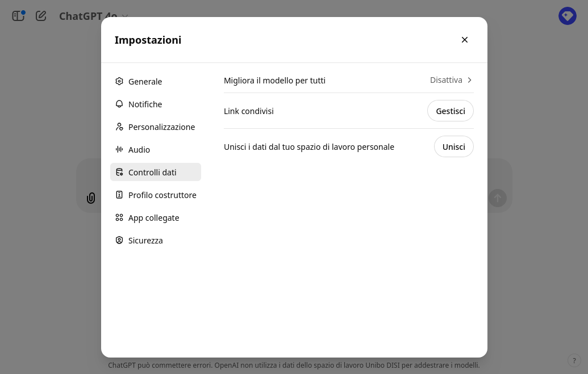
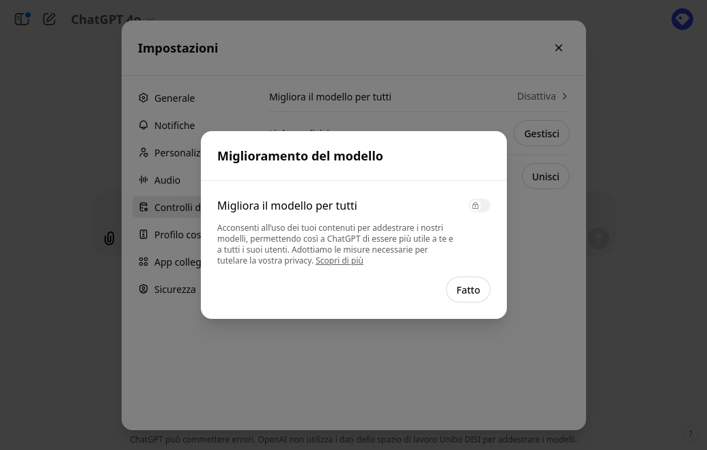

GenAI: Tecnologie ed Esempi di Utilizzo Per La Didattica – In relazione alle linee guida di ateneo
Giovanni Ciatto & Giovanni Antonioni
Dipartimento di Informatica — Scienza e Ingegneria (DISI), Sede di Cesena,
Alma Mater Studiorum—Università di Bologna

(versione presentazione: 2025-09-14)
Link a queste slide
Scaletta
GenAI: Intelligenza Artificiale Generativa
Algoritmi di IA in grado di generare automaticamente contenuti, e.g.:
- testo
- immagini
- audio e/o video
- codice [di programmazione]
- …
GenAI mediante Modelli Fondazionali (FM)
- Grosse reti neurali che imparano ad elaborare, “capire”, e produrre dati non [necessariamente] strutturati
- allenati su grandi quantità di dati, e con grandi risorse computazionali, a fare un po’ tutto
- con l’idea di poterli poi specializzare per compiti specifici

Terminologia: Modelli Fondazionali vs. Large Language Models

GenAI con modello di consumo as-a-Service

GenAI con modello di consumo as-a-Service
-
Modelli di costo:
- ad abbonamento: si paga un canone fisso mensile/annuale per avere accesso al servizio
- spesso contiene comunque limiti di consumo
- a consumo: si paga in proporzione all’uso effettivo del servizio
- ad abbonamento: si paga un canone fisso mensile/annuale per avere accesso al servizio
-
Consumo è misurato in base allo sforzo computazionale necessario per servire la richiesta:
- token processati (per testo)
- quantità di richieste effettuate per unità di tempo (minto, ore, giorno, mese)
- dimensione dei dati processati (per immagini, audio, video)
- complessità dello specifico modello impiegato per per servire la richiesta
-
La generazione da considerarsi un processo stocastico, per costruzione
- La qualità del servizio è soggetta a casualità e a fluttuazioni dovute a:
- carico del servizio
- scelta del modello, e relativo aggiornamento
- limiti di servizio eventualumente raggiunti nel quanto di tempo corrente
- caso
Ciclo di apprendimento di GenAI

Ciclo di apprendimento di GenAI — Conseguenze (pt. 1)
-
Bias di campionamento: GenAI conosce solo ciò su cui è stato allenato + pia speranza che impari a generalizzare
-
L’apprendimento usa dati presi dal Web + eventuali dati aziendali del fornitore del servizio
- comprovato impiego delle interazioni degli utenti precedenti come feedback per allenamenti successivi
- Informazioni di nicchia possono non essere apprese correttamente (o affatto)
- Fondamentale evitare di convididere informazioni sensibili, confidenziali, o protette da diritti d’autore
Ciclo di apprendimento di GenAI — Conseguenze (pt. 2)
-
Cicli di apprendimento estramente costosi in termini di denaro e risorse computazionali…
-
… eseguiti periodicamente (settimane? mesi?) per migliorare la qualità del servizio
- il modello di consumo as-a-Service permette all’utente di avere accesso traspente al servizio aggiornato
- Informazioni recenti potrebbero non essere state (ancora) apprese
- Rischio di ricevere risposte datate o manchevoli da GenAI
- GenAI dà l’impressione di star imparando durante la conversazione, ma in realtà lo fa offline
Alcune soluzioni tecnologiche permettono di scegliere (pt. 1)

Alcune soluzioni tecnologiche permettono di scegliere (pt. 2)

Alcune soluzioni tecnologiche permettono di scegliere (pt. 3)

Alcune soluzioni tecnologiche permettono di scegliere (pt. 4)

Principali soluzioni tecnologiche
Categorizzate per tipo di interfaccia
- Conversazionali: e.g. ChatGPT, Claude, Scite
- Auto-completamento: e.g. GitHub Copilot
- Programmatiche: e.g. OpenAI Platform, Hugging Face
- In-App: e.g. Microsoft 365 Copilot
- Editing di audio-visivi: e.g. Suno, Runway
Lista non esaustiva!
Interfaccia conversazionale

- Interazione testuale che mima una corrispondenza (chat)
- l’utente chiede, l’IA risponde reattivamente
- L’interfaccia permette l’inserimento di un prompt
- opzionalmente contenente allegati (e.g. immagini, documenti)
- Le risposte sono contestuali
- i.e., lo storico della conversazione impatta le risposte future
- La risposta contiene testo (spesso formattato)
- opzionalmente: immagini, URL, codice
Talvolta…
- … prima di rispondere, l’IA fa una ricerca su Web
- importante per avere risultati aggiornati
Interfaccia basata su auto-completamento

- L’IA suggerisce un completamento per il testo inserito
- e.g., codice, testo, URL
- L’utente accetta (anche in parte) o ignora il suggerimento
- Usato anche e soprattutto per codice di programmazione
Attenzione…
- … modello di costo ad abbonamento (vedi qui)
- … potenziali leak di informazioni sensibili
- … rischio di lock-in non trascurabile
Interfaccia programmatica
import asyncio
from openai import AsyncOpenAI
client = AsyncOpenAI(api_key="sk-1234567890abcdef1234567890abcdef")
async def main():
stream = await client.chat.completions.create(
model="gpt-4",
messages=[
dict(role="user",
content="European countries, one by line")
],
stream=True,
)
async for chunk in stream:
print(chunk.choices[0].delta.content or "", end=", ")
asyncio.run(main())
Output:
Albania, Andorra, Austria, Belarus, Belgium, Bosnia and Herzegovina, Bulgaria, Croatia, Cyprus, Czech Republic, Denmark, Estonia, Finland, France, Germany, Greece, Hungary, Iceland, Ireland, Italy, Kosovo, Latvia, Liechtenstein, Lithuania, Luxembourg, Malta, Moldova, Monaco, Montenegro, Netherlands, North Macedonia, Norway, Poland, Portugal, Romania, Russia, San Marino, Serbia, Slovakia, Slovenia, Spain, Sweden, Switzerland, Turkey, Ukraine, United Kingdom, Vatican City (Holy See),
-
Linguaggio di programmazione che interagisce con IA
- e.g., Python, JavaScript
-
L’interazione rimane di tipo richiesta-risposta
- il programma invia una richiesta, l’IA risponde
Abilitante per
-
Prompt parametrici, risposte processate automaticamente
- es.
list of LOCALITIES in AREA, one by line- dove
LOCALITIES$\in$ {cities,regions,states} - e
AREA$\in$ {Europe,Asia,Africa,America,Oceania} - risultati ordinati alfabeticamente
- dove
- es.
-
Scrittura software che usa l’IA come servizio
- utile in industria come in ricerca
Attenzione…
- … modello di costo a consumo (vedi qui)
- proporzionale al numero di token processati
- prezzi variabili per modello
Interfaccia in-app

-
GenAI integrata in applicazioni desktop o web
- e.g., Microsoft Office (Word, Excel, Outlook)
-
supporto per interfaccia conversazionale interna
- conversazione intrinsecamente contestualizzata
-
IA automatizza operazioni complesse (interne all’app)
- e.g., scrittura di bozze
- e.g., generazione di formule, grafici
Attenzione…
- … modello di costo ad abbonamento (vedi qui)
- … potenziali leak di informazioni sensibili
- … rischio di lock-in non trascurabile
Interfaccia per editing di audio-visivi (e.g. musica)

-
Interazione one-shot per generare il contenuto
- input: descrizione testuale del contenuto
- output: contenuto
-
L’interfaccia permette poi
- riproduzione del contenuto
- modifica del contenuto
- e.g., taglio di parti, modifica di tonalità
Esempio
Principali modalità d’utilizzo
Categorizzate per ruolo di GenAI
GenAI come…
- … motore di ricerca: uso GenAI per ricercare informazioni
- … assistente di (ri)scrittura: uso GenAI per (ri)scrivere documenti
- … assistente di lettura: uso GenAI per acquisire informazioni da documenti
- … assistente per l’elaborazione dei dati: uso GenAI per elaborare dati
- … generatore di contenuti: uso GenAI per creare contenuti
Lista non esaustiva!
GenAI come motore di ricerca
Disclaimer
GenAI non è un motore di ricerca come Google, Bing, DuckDuckGo, etc.
-
FM, di base, non accedono al Web (né interrogano qualche sorgente) prima di rispondere
- alcune tecnologie specifiche possono farlo, ma non c’è garanzia
-
FM, di base, rispondono in base a dati e conoscenze acquisite durante l’allenamento
- informazioni successive all’ultimo ciclo di apprendimento potrebbero non essere considerate
-
FM possono essere immaginati come grandi memorie
- in cui (porzioni de) lo scibile umano è stato “registrato”
- interrogabili tramite il linguaggio naturale
-
Le risposte di GenAI non vanno mai accettate acriticamente, in quanto suscettibili di allucinazioni:
- errori: informazioni fattualmente false o inventate, riportate con sicumera
- fraitendimenti: informazioni fuori contesto o non pertinenti rispetto all’aspettativa dell’utente
- bias: di campionamento delle informazioni, di selezione del motore di ricerca, intrinseci nel linguaggio, etc.
AI in ambito accademico.
-
Abbiamo visto vari esempi di impiego generico di GenAI a supporto di attività generiche
- generazione contenuti, supporto alla scrittura, assistenza nella ricerca, analisi dei dati, _etc…
-
Con i progressi ottenuti, l’AI è oggi sempre più integrata in ambiti diversi.
-
Anche il mondo accademico si inserisce in questa tendenza, con GenAI a supporto delle varie attività.
AI in ambito accademico.
L’utilizzo di strumenti AI varia a seconda del ruolo accademico considerato.
Docenti
- Supporto alla creazione di contenuti didattici
- Sviluppo curriculum e strutturazione delle lezioni
- Valutazione e feedback sull’andamento del corso
- Supporto alle attività amministrative
- Creazione di tutoring AI personalizzato
Studenti
- Produzione contenuti per progetti o appunti
- Comprensione concettuale di argomenti complessi
- Arricchimento del materiale prodotto o studiato
- Brainstorming generazione idee per progetti o ricerche
AI in ambito accademico: Docenti
- I Docenti utilizzano AI per semplificare e migliorare vari aspetti della loro attività didattiche.
Caso 1: Creazione di contenuti didattici
- I vari strumenti di AI possono essere adoperati per la generazione di vari contenuti
- Slide e quiz interattivi per gli studenti sono gli esempi più comuni…ma non sono i soli:
- Possibile definire anche casi d’uso appositi per argomentare discussioni in classe
- Creazione di guide di studio per gli studenti.
- Generazione di esempi pratici per illustrare concetti teorici (codice, esercizi matematici, etc…).
AI in ambito accademico: Docenti
- I Docenti utilizzano AI per semplificare e migliorare vari aspetti della loro attività didattiche.
Caso 2: Delineazione corsi e pianificazione lezioni
- Diversi strumenti AI possono essere usati come supporto per la delineazione dei vari aspetti di un corso:
- Definizione degli obiettivi di apprendimento.
- Strutturazionedi un curriculum coerente e completo.
- Suggerimenti su contenuti e risorse da includere come approfondimento.
- Suggerimenti su compiti o progetti per valutare gli studenti.
- Definizione di una metodologia di valutazione basata su competenze acquisite.
AI in ambito accademico: Docenti
- I Docenti utilizzano AI per semplificare e migliorare vari aspetti della loro attività didattiche.
Caso 3: Valutazione e feedback
- AI trova impiego anche nel monitoraggio e valutazione del progresso degli studenti, con suggerimenti personalizzati per migliorare l’apprendimento
- Analisi delle prestazioni degli studenti attraverso dati e metriche.
- Feedback personalizzato basato sulle risposte degli studenti nei quiz o compiti.
- Identificazione di aree di miglioramento
- Suggerimenti su risorse o strategie di studio personalizzate.
AI in ambito accademico: Docenti
- I Docenti utilizzano AI per semplificare e migliorare vari aspetti della loro attività didattiche.
Caso 4: Supporto attività amministrative
- L’efficacia nell’automatizzazione di compiti ripetitivi rende AI uno strumento utile per la gestione di varie attività amministrative
- Gestione delle comunicazioni con gli studenti (email, annunci, etc…).
- Gestione delle iscrizioni e registrazioni degli studenti.
- Monitoraggio delle scadenze accademiche e amministrative.
AI in ambito accademico: Docenti
- I Docenti utilizzano AI per semplificare e migliorare vari aspetti della loro attività didattiche.
Caso 5: Creazione di tutor AI personalizzati
- È possibile creare tutor AI personalizzati per assistere gli studenti al di fuori delle ore di lezione in grado di:
- Rispondere a domande frequenti sugli argomenti del corso.
- Fornire spiegazioni aggiuntive su concetti complessi.
- Fornire supporto personalizzato in base alle esigenze individuali degli studenti.
AI in ambito accademico: Studenti
- Gli Studenti utilizzano AI per semplificare e migliorare vari aspetti della loro attività didattiche.
Caso 1: Produzione di contenuti
- Gli studenti possono utilizzare AI per la generazione di vari contenuti:
- Creazione di appunti di studio sintetici e organizzati.
- Generazione di bozze per progetti o relazioni.
- Creazione di presentazioni per progetti accademici.
AI in ambito accademico: Studenti
- Gli Studenti utilizzano AI per semplificare e migliorare vari aspetti della loro attività didattiche.
Caso 2: Comprensione
- Diverse soluzioni AI sono in grado di aiutare gli studenti nello studio:
- Spiegazioni semplificate di concetti complessi.
- Risposte a domande specifiche su argomenti di studio.
- Suggerimenti per ulteriori letture o risorse di apprendimento.
- Esempi pratici per illustrare concetti teorici (codice, esercizi matematici, etc…).
AI in ambito accademico: Studenti
- Gli Studenti utilizzano AI per semplificare e migliorare vari aspetti della loro attività didattiche.
Caso 3: Arricchimento materiale prodotto
- AI può aiutare a migliorare qualitativamente del materiale prodotto dagli studenti:
- Correzione grammaticale e stilistica di testi.
- Parafrasi o riformulazione di contenuti per maggiore chiarezza.
- Suggerimenti per migliorare la struttura o l’organizzazione del materiale.
- Strutturazione di codice per progetti di programmazione.
- Generazione di grafici o diagrammi per visualizzare dati o concetti.
AI in ambito accademico: Studenti
- Gli Studenti utilizzano AI per semplificare e migliorare vari aspetti della loro attività didattiche.
Caso 4: Brainstorming
- Strumenti AI possono essere affiancati agli studenti a supporto del processo creativo:
- Idee per progetti o ricerche.
- Refactoring di codice.
- Trovare soluzioni alternative a problemi complessi.
- Suggerimenti per migliorare l’efficacia di presentazioni o discorsi.
Sfide e criticità dell’applicazione di GenAI all’educazione
- L’integrazione di AI generativa nell’educazione presenta enormi opportunità sia per studenti che docenti
- Tuttavia è giusto considerare anche varie criticità che possono emergere nell’adozione delle varie soluzioni:
- Possibili impatti negativi sull’apprendimento
- Questioni etiche e di privacy
- Facilità di abuso degli strumenti AI
- Vi è un dibattito in corso su come bilanciare i vari benefici offerti dall’AI con le potenziali sfide etiche, pedagogiche e pratiche.
Si vuole evitare che l’AI diventi un ostacolo piuttosto che un supporto all’apprendimento.
Integrità Accademica e Preoccupazioni per la Frode
- Vi sono preoccupazioni sempre più diffuse riguardo l’utilizzo di strumenti AI nel compromettere valutazioni date agli studenti e nell’integrità accademica.
- Non vi è un controllo diretto su come gli studenti utilizzano questi strumenti, e ciò può portare a:
- Plagio o presentazione di lavoro non originale.
- Difficoltà nel valutare le competenze reali degli studenti.
- Erosione della fiducia tra studenti e docenti.
Integrità Accademica e Preoccupazioni per la Frode
- Questo ha comportato la nascita di discussioni sull’effettivo utilizzo di AI in ambito accademico.
- Alcuni sostengono l’uso dell’ AI debba essere rigorosamente limitato o vietato in certi contesti educativi.
- Altri, invece, vedono nell’AI un’opportunità per migliorare l’apprendimento e l’insegnamento, a patto che venga utilizzata in maniera responsabile.
Integrità Accademica e Preoccupazioni per la Frode
- Una delle soluzioni proposte è l’adozione di sistemi di rilevamento di contenuti generati da AI. Tuttavia, questi presentano varie limitazioni:
- Non rilevano direttamente il “plagio” ma piuttosto identificano testi che “sembrano” generati da AI (similarità).
- Sono limitati in ciò che possono rilevare (esempio il riscrivere un testo generato da AI con parole proprie).
- Possono produrre falsi positivi, penalizzando ingiustamente studenti.
- Possono essere aggirati con tecniche semplici.
Rischi per la Privacy dei Dati e la Sicurezza
- Dati caricati su piattaforme AI possono essere utilizzati per addestrare modelli futuri
- Ciò può comportare rischi per la privacy, specialmente se i dati contengono informazioni sensibili o personali.
- Le istituzioni educative hanno responsabilità che gli strumenti AI aderiscano a normative sulla privacy e protezione dei dati (es. GDPR, FERPA, COPPA).
- Le istituzioni devono decidere se limitare gli strumenti popolari o investire in soluzioni dedicate e conformi.
Problemi di Bias, Disinformazione e Accuratezza
- I modelli AI possono riflettere e amplificare errori presenti nei dati di addestramento.
- Ciò può portare a disinformazione o rappresentazioni distorte di argomenti.
- Gli studenti potrebbero accettare informazioni errate come verità, compromettendo la qualità dell’apprendimento.
- Risulta fondamentale accrescere una capacità di utilizzo responsabile e critica degli strumenti AI.
Problemi di Bias, Disinformazione e Accuratezza
- Studenti e docenti devono essere consapevoli dei limiti e potenziali errori degli strumenti AI.
- È importante insegnare a valutare criticamente le informazioni generate da AI e a verificare le fonti ed eventuali bias.
- Gli educatori devono progettare compiti che richiedano un’analisi critica degli output dell’IA, promuovendo competenze che vanno oltre la semplice ricerca di informazioni.
- IA da strumento che fornisce risposte a strumento che supporta il pensiero critico e la risoluzione di problemi.
Impatto sul Pensiero Critico e sull’Eccessiva Dipendenza
-
Abbiamo visto come potenzialmente strumenti AI siano in grado:
- Di fornire facilmente accesso a risposte rapide.
- Generare immediatamente contenuti su richiesta.
-
Tale facilità può portare a una dipendenza eccessiva dagli strumenti AI
-
Diversi ostacoli all’apprendimento e allo sviluppo del pensiero critico:
- Riduzione della capacità di ricerca indipendente.
- Diminuzione della capacità di analisi critica delle informazioni.
- Minore sviluppo di competenze di risoluzione dei problemi.
Impatto sul Pensiero Critico e sull’Eccessiva Dipendenza
-
Ricerche evidenziano come però, l’uso di AI generativa:
- Possano incrementare la creatività,
- Facilitare un apprendimento più profondo se usata per aumentare la conoscenza e la costruzione di idee.
-
A livello educativo è necessario progettare attività che incoraggino l’uso critico e riflessivo degli strumenti AI, promuovendo un equilibrio tra l’uso di AI e lo sviluppo di competenze umane fondamentali.
Necessità di Sviluppo Professionale e Alfabetizzazione sull’IA
- Molti docenti non hanno ancora ricevuto una formazione adeguata sull’uso dell’IA, nonostante la sua diffusione crescente.
- I distretti scolastici stanno iniziando a introdurre linee guida e programmi di formazione per docenti e studenti.
- È stato suggerito che un modulo o un corso dedicato ai chatbot IA dovrebbe diventare una componente obbligatoria dei corsi di laurea per garantire che gli studenti siano informati sull’uso di tali strumenti.